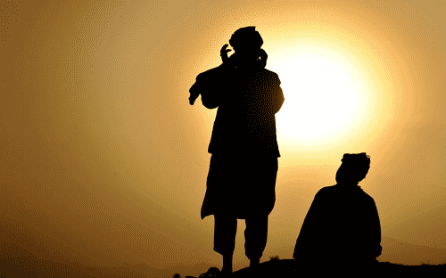

Rod Berne is a student, writer, and thought criminal. His columns run every Saturday. Follow him on Twitter.


On March 22, 2016, the attacks in Brussels marked the fourth major terrorist attack witnessed in the Western world in just over a year. Once again, we are reminded by journalists, pundits, and politicians that terrorism has nothing to do with religion. Following the attacks on Brussels, President Obama stated, “This is yet another reminder that the world must unite. We must be together regardless of nationality, or race, or faith, in fighting against the scourge of terrorism.”
What motivates a terrorist? Insert the standard hopes and projections of progressive leftism: how would you feel if Western colonial powers divided your lands, stole your oil, and insulted your culture? Furthermore, consider Bernie Sanders’ nonsensical statements that terrorism is a consequence of climate change.
Above all, leftists claim that one can’t take Islamic terrorists at their word: their statements about God, infidels, and martyrdom are obscuring their real motivations. It’s obvious that Muslims want what everyone wants—political and economic security, a chance at a better life, and a bright future for their children.
There are four important factors that leftists fail to take into account: Religious scripture, the emptiness of Western decadence, destructive school curricula, and sexual frustration.

The primary recruiting technique of ISIS is not social or financial but rather theological. The Quran and hadith (the collection of the quotes of the prophet Muhammad) are the highest sources of authority in Islam. ISIS references specific passages and calls upon Muslims their duty to fight against the enemies of Islam and to emigrate to the Islamic State once it has been established.
Part of the problem is that leftists are Godless, and therefore assume that anyone who claims they are doing something in the name of God must be lying or concealing their true motivations. They think to themselves that because they don’t believe in God, most other people don’t believe in Him either. Therefore they must be turning to terrorism because of factors that liberals can personally understand, like joblessness, oppression, or the cruelty of the West.
Following the murder of journalist James Foley by a British jihadist, President Obama said, “ISIL speaks for no religion.” This is a delusional statement because the name of the religion which inspired this group is in their title “Islamic State.” Somehow liberals think they understand the religion of Islam better than Abu Bakr al-Baghdadi who is the leader of ISIS and obtained a PhD in Islamic Studies.
Maajid Nawaz, author of the book Islam and the Future of Tolerance, has said,
We Muslims must admit there are challenging Koranic passages that require reinterpretation today. Only by rejecting vacuous literalism are we able to condemn, in principle, ISIS-style slavery, beheading, lashing, amputation & other medieval practices forever (all of which are in the Quran).
In short, ISIS abides by a literal reading of the Quran, which is as close to “true Islam” as one can get. Liberals have a rosy-eyed view of any religion that is not Christianity. The fact of the matter is that terrorism has strong roots in religion. A cursory examination of history clearly shows that beliefs inform behavior and certain religious ideas—jihad, martyrdom, blasphemy, apostasy—reliably lead to violence and murder.
Whenever someone mentions the violent nature of Islam, politicians like Obama bring up the Crusades. Angela Merkel, when asked a question about whether the influence of Islam might have some unforeseen consequences on Europe, responded that Christianity hasn’t been the perfect religion either. It’s as though one person says, “That person murdered someone!” And another responds, “So what? Your ancestor murdered someone too!” as though that excuses all murder done by anyone in the present.
This point can be summed up by a quote from an article titled What ISIS Really Wants: “When a masked executioner says Allahu Akbar while beheading an apostate, sometimes he’s doing so for religious reasons.”
There is severe ennui, a feeling of listlessness and dissatisfaction among the Western-born would-be jihadists. Lack of access to jobs or other economic factors cannot explain why Western-born Muslims are leaving the comforts of home to wage jihad in Syria and Iraq. These individuals are seeking some source of transcendental fulfillment, which Western-style consumerism has failed to provide.
In the West, Apple products have replaced God. While some young people are content to drink more Starbucks and buy more iPhones, others want the chance to become a part of something greater than themselves. SJWs do this by shouting about imaginary oppression, creating their own form of religion where the infidels are white males and conservative thinkers.
Decadence is the new religion for young Westerners
For people who have struggled to find meaning in their lives amid social media and consumer culture, ISIS is a thrilling cause that guarantees glory and esteem. It ensures that the person will be remembered after death for serving a cause worth fighting for. This is the theme of Michel Houellebecq’s Submission, in which the narrator notes the appeal of Islam in light of the emptiness of Western consumerism and decadence.
What do potential terrorists think when they see this image?
While the transcendental aspect of religious terrorism explains why people might uproot their lives and move to another country, it doesn’t explain why others in the West excuse or rationalize the behavior of terrorists.
The West lacks the confidence in its own culture to assert the values of a liberal democracy. School curricula have brainwashed citizens into thinking that the negative aspects of Western history far outweigh any benefits it has brought forth. For Western-born terrorists who go through our school systems, they quickly learn the evils of the West while remaining ignorant to the many benefits of living in a free society.
This is depicted in one reported scenario involving FBI agents and a teenage girl from a Chicago suburb on her way to Syria. When asked by the FBI if joining a group that controls the dress of women and beheads people with whom they disagree seemed like a good plan, the girl retorted “Well, what about the barrel bombings that kill thousands? Maybe if the beheading helps to stop that.”
This is the inevitable result of an education curriculum and culture that repeatedly emphasizes the sins of the West, without instructing students on the advances made by their culture. Self-flagellating college student can speak at length about the effects of colonialism on non-Western countries or the horrible conditions of the American slave trade, but few are aware that countries like Afghanistan, Yemen, and Saudi Arabia did not outlaw slavery until well into the 20th century.
The failures of the West: Brussels, March 22, 2016.
If you present this fact to a student, it is guaranteed that they will spin it to somehow place the blame on Western countries. This in itself is a sort of soft prejudice—the belief that only the actions of Western countries matter, while others make no decisions unless they are in response to, or result of, the actions of the West.
Even the foundation of Western society—freedom of speech—is not given the appreciation it truly deserves. Leftists don’t understand that this law exists to protect the communication of radical ideas. Freedom of speech laws weren’t made to protect old ladies from saying, “Good morning” but rather to protect cartoonists who draw provocative images or writers who pen controversial satire. Freedom of speech is under assault by people who do not understand its importance and fragility.
Another element of terrorism that is not given the attention it deserves is the sexual frustration of young males. Marriage and family have a stabilizing effect on men. Married men are far less likely to commit violent or sexual crimes.
In the Middle East, where polygamy is rampant, young males are left without sexual partners. Simple math shows that in a population of 10 men and 10 women, if 1 of the men has 4 wives, that leaves 6 single men. Scale that up to entire countries, and you can see this playing out across the Middle East.
In an article in The Economist, the author writes, “Wars, alas, give young men a chance to kill potential rivals (ie, other men) and seize or rape women. From Islamic State to the Lord’s Resistance Army in Uganda, rebel forces often let their troops treat females as spoils.”
In the same article, they note that polygamous societies suffer “higher rates of murder, theft, rape, social disruption, kidnapping (especially of females), sexual slavery and prostitution.”
One well-known passage from the Hadith is the reward of 72 virgins given to a martyr after death. This appeals directly to a young man’s sexual desires. Martyrs are not promised a well-paying job, political peace, or economic security. They are promised sexual partners. ISIS is now using the promise of sexual slaves to recruit new members.
The failure to understand the power of male sexuality has had destabilizing effects on the Middle East. As male-female relationships collapse in the West, with top tier males maintaining soft harems and beta males left out, the future looks bleak for young men in the West.
The four factors of religious inspiration, emptiness of consumer culture, indoctrination of Western education, and sexual frustration are motivating young males (and even females) to join the ranks of ISIS and wage jihad. Perhaps one day we will make good on our “pledge to do everything we can to assist our European allies.” But today, we won’t even honestly discuss the motivations of terrorism.
For young males, neomasculinity may be the only viable alternative philosophy to the decadence of the West and the violence of Islamic terrorism.